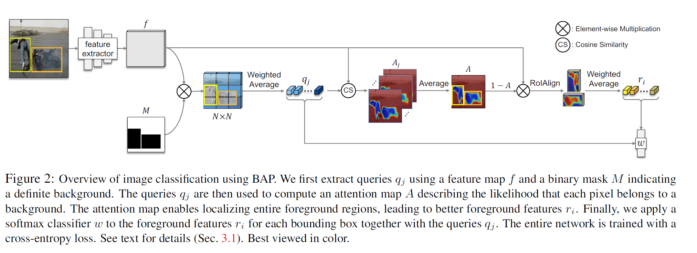
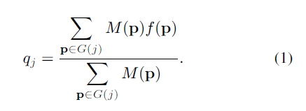
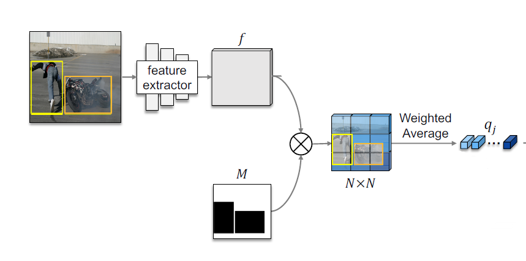
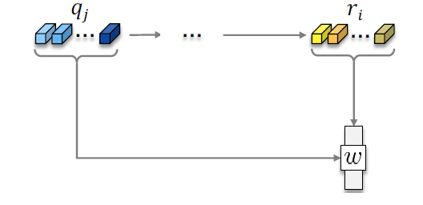

文章标题：Background-Aware Pooling and Noise-Aware Loss forWeakly-Supervised Semantic Segmentation
文章链接：https://arxiv.org/abs/2104.00905
发表时间：2021-04-02 (CVPR 2021)
在使用边界框注释解决了弱监督语义分割（WSSS）的领域中，没有指定对象边界，因此很难训练卷积神经网络 (CNN) 进行语义分割。作者发现模型对边界框内外背景区域的感知具有相似性，这可以用来区分对象边界框内的前景和背景区域。
弱监督语义分割中的背景感知池化和噪声感知损失
① 提出了BAP（背景感知池）方法，能够在边界框内分辨出前景和背景。具体做法是特征图上，利用边界框外的背景，计算出背景的特征表达。得到背景表达后，可以和边框内特征做相似度，对边界框内的背景和前景进行分割。（这里的特征表达有点原型Prototype的意思，原型即一个类别的区别于其他类的共有特点，可以使用一个向量来表示，可以理解为聚类中心）
② 引入了一个NAL（噪声感知损失）来训练CNN的语义分割。在以往的方法中，对于一个分类不明确的点，往往采用直接舍弃的方法，但是作者指出，可以更具它的置信度来分配一定的分数（即噪声感知），来优化边缘。
效果： 在PASCAL VOC 2012数据集上使用DeepLab-V1（VGG-16）与最先进的方法进行定量比较，以mIoU计。粗体数字表示最好的性能，下划线的数字是第二好的。
Image-level labels (10K) with Saliency (3K)
| 方法 | val | 测试 |
|---|---|---|
| SeeNetNIPS’18 | 61.1 | 60.7 |
| FickleNetCVPR’19 | 61.2 | 61.9 |
| OAAICCV’19 | 63.1 | 62.8 |
| ICDCVPR’20 | 64.0 | 63.9 |
Supervision: Boxes (10K)
| 方法 | val | 测试 |
|---|---|---|
| BoxSupICCV’15 | 62.0 | 64.6 |
| WSSLICCV’15 | 60.6 | 62.2 |
| SDICVPR’17 | 65.7 | 67.5 |
| BCMCVPR’19 | 66.8 | - |
| 67.8 | - | |
| 66.1 | - | |
| 68.1 | 69.4 |
Boxes (9K) with Masks (1K)
| 方法 | val | 测试 |
|---|---|---|
| BoxSupICCV’15 | 63.5 | 66.2 |
| WSSLICCV’15 | 65.1 | 66.6 |
| SDICVPR’17 | 65.8 | 66.9 |
| BCMCVPR’19 | 67.5 | - |
| w/ NAL | 70.5 | 71.5 |
【整体流程】如下图所示，输入通过特征提取，接下来将特征值池化成N*N的格子，通过softmax，分类每一个类（包括背景）进行训练，使网络可以对目标进行提取。

【背景平均特征向量】在这个过程中，为了得到前景（目标）的伪标签，作者逆向思维从背景出发进行寻找（找到背景剩下的就是前景了）。首先通过公式（1）来计算一小块N*N格子中背景的均值向量，其中G(j)表示每个网格单元，M(p)不属于 前景框的像素。通过公式（1）的计算，就使得 qj 的值表示了N x N格子中的背景的所有像素的特征向量均值。


【背景概率图】接着我们用这j个特征向量均值和前景框里的每一个像素上的特征向量进行一次

注：f(p)/||f(p)|| 和 qj/||qj||都表示向量归一化，B表示前景框里的像素集合

【前景概率图】求出了背景的区域的概率A(p)，这样，我们用1减去这个A(p)就得到了每一个像素属于目标物体的概率。接着，类似于公式（1），这里的公式（4），其中 ri 表示了一个前景格子中前景部分的平均特征向量。


【训练过程】 这里的qj和ri可以理解为将原图像素进行了N*N的特征池化操作，所以直接把这两个均值向量融合，当作一张特征图，后面就接图像分类的softmax那一套东西了。

是通过条件随机场生成的伪标签，通过 “背景关注图” 与 “类激活图” 生成。
是通过每一个类别的原型在特征图上余弦相似度所得到的。对于背景来说，会使用到特征图的全部信息，而对于目标来说，只会使用到边界框中的特征图信息。

对于 和 分类相同的区域，作者就将他们进行直接的损失计算。其中表示 和 分类相同的每一个像素，表示像素 属于类别的概率。
而对于 和 分类不一致的点，其结果是否真实有效不可确定。以前的方法往往将这些点忽略，而作者认为他们也应该被考虑。但考虑又会带来噪声，于是使用一个与置信度有关的系数来控制他们。具体公式如下
其中表示 和 分类不一致的点，简单来说就是加入了一个作为系数来对这些像素的结果进行约束。其中 计算方式如下，首先会计算分类器在c类上的权值和特征图的相似程度，进行归一化，之后使用指数进行约束。
c∗ 是 产生的标签，当指数 > 1 越大时，其结果越接近二分类）
综上损失计算为: